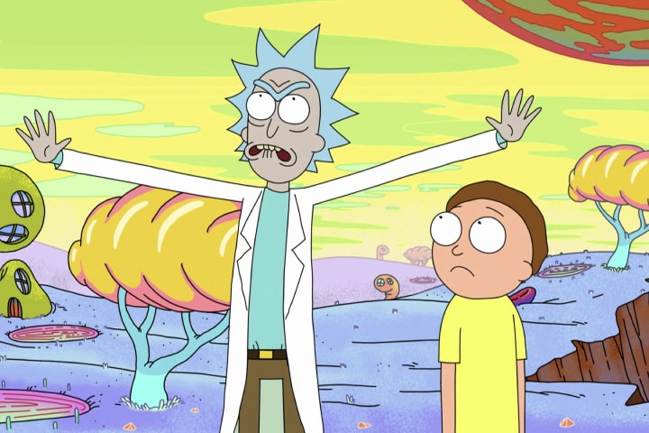

Вязание | |
|  |
Первый раз я попробовала вязать долгими зимними вечерами. Это успокаивает, затягивает. Всегда интересно посмотреть
на результат своих трудов. Я могу связать зимний комплект на зиму И конечно вдвойне приятнее носить то, что
сделала сама.
|